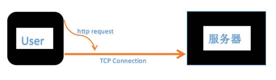
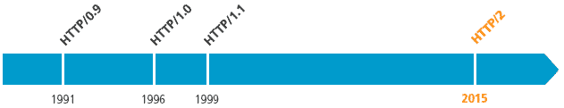
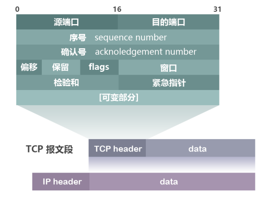
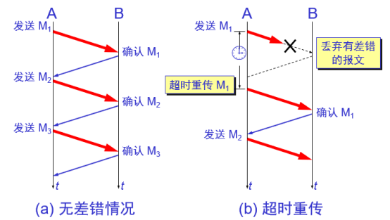
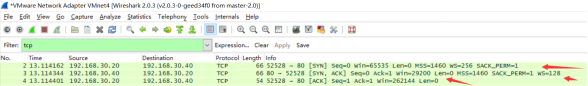

原文连接:https://www.cnblogs.com/AhuntSun-blog/p/12028636.html
一、TCP connection


客户端与服务器之间数据的发送和返回的过程当中需要创建一个叫TCP connection的东西；
由于TCP不存在连接的概念，只存在请求和响应，请求和响应都是数据包，它们之间都是经过由TCP创建的一个从客户端发起，服务器接收的类似连接的通道，这个连接可以一直保持，http请求是在这个连接的基础上发送的；
在一个TCP连接上是可以发送多个http请求的，不同的版本这个模式不一样。
在HTTP/1.0中这个TCP连接是在http请求创建的时候同步创建的，http请求发送到服务器端，服务器端响应了之后，这个TCP连接就关闭了；
HTTP/1.1中可以以某种方式声明这个连接一直保持，一个请求传输完之后，另一个请求可以接着传输。这样的好处是：在创建一个TCP连接的过程中需要“三次握手”的消耗，“三次握手”代表有三次网络传输。
如果TCP连接保持，第二个请求发送就没有这“三次握手”的消耗。HTTP/2中同一个TCP连接里还可以并发地传输http请求。
二、TCP报文格式简介

其中比较重要的字段有：
（1）序号（sequence number）：Seq序号，占32位，用来标识从TCP源端向目的端发送的字节流，发起方发送数据时对此进行标记。
（2）确认号（acknowledgement number）：Ack序号，占32位，只有ACK标志位为1时，确认序号字段才有效，Ack=Seq+1。
（3）标志位（Flags）：共6个，即URG、ACK、PSH、RST、SYN、FIN等，具体含义如下：
- URG：紧急指针（urgent pointer）有效。
- ACK：确认序号有效。
- PSH：接收方应该尽快将这个报文交给应用层。
- RST：重置连接。
- SYN：发起一个新连接。
- FIN：释放一个连接。
需要注意的是：
- 不要将确认序号Ack与标志位中的ACK搞混了。
- 确认方Ack=发起方Seq+1，两端配对。
三、TCP的三次握手（Three-Way Handshake）
1.”三次握手”的详解
所谓的三次握手即TCP连接的建立。这个连接必须是一方主动打开，另一方被动打开的。
以下为客户端主动发起连接的图解：
3.png)
握手之前主动打开连接的客户端结束CLOSED阶段，被动打开的服务器端也结束CLOSED阶段，并进入LISTEN阶段。随后开始“三次握手”：
（1）首先客户端向服务器端发送一段TCP报文，其中：
标记位为SYN，表示“请求建立新连接”;
序号为Seq=X（X一般为1）；
随后客户端进入SYN-SENT阶段。
（2）服务器端接收到来自客户端的TCP报文之后，结束LISTEN阶段。并返回一段TCP报文，其中：
标志位为SYN和ACK，表示“确认客户端的报文Seq序号有效，服务器能正常接收客户端发送的数据，并同意创建新连接”（即告诉客户端，服务器收到了你的数据）；
序号为Seq=y；
确认号为Ack=x+1，表示收到客户端的序号Seq并将其值加1作为自己确认号Ack的值；随后服务器端进入SYN-RCVD阶段。
（3）客户端接收到来自服务器端的确认收到数据的TCP报文之后，明确了从客户端到服务器的数据传输是正常的，结束SYN-SENT阶段。并返回最后一段TCP报文。其中：
标志位为ACK，表示“确认收到服务器端同意连接的信号”（即告诉服务器，我知道你收到我发的数据了）；
序号为Seq=x+1，表示收到服务器端的确认号Ack，并将其值作为自己的序号值；
确认号为Ack=y+1，表示收到服务器端序号Seq，并将其值加1作为自己的确认号Ack的值；
随后客户端进入ESTABLISHED阶段。
服务器收到来自客户端的“确认收到服务器数据”的TCP报文之后，明确了从服务器到客户端的数据传输是正常的。结束SYN-SENT阶段，进入ESTABLISHED阶段。
在客户端与服务器端传输的TCP报文中，双方的确认号Ack和序号Seq的值，都是在彼此Ack和Seq值的基础上进行计算的，这样做保证了TCP报文传输的连贯性。一旦出现某一方发出的TCP报文丢失，便无法继续"握手"，以此确保了"三次握手"的顺利完成。
此后客户端和服务器端进行正常的数据传输。这就是“三次握手”的过程。
2.“三次握手”的动态过程
4.png)
3.“三次握手”的通俗理解
5.png)
举个栗子：把客户端比作男孩，服务器比作女孩。用他们的交往来说明“三次握手”过程：
（1）男孩喜欢女孩，于是写了一封信告诉女孩：我爱你，请和我交往吧！;写完信之后，男孩焦急地等待，因为不知道信能否顺利传达给女孩。
（2）女孩收到男孩的情书后，心花怒放，原来我们是两情相悦呀！于是给男孩写了一封回信：我收到你的情书了，也明白了你的心意，其实，我也喜欢你！我愿意和你交往！;
写完信之后，女孩也焦急地等待，因为不知道回信能否能顺利传达给男孩。（3）男孩收到回信之后很开心，因为发出的情书女孩收到了，并且从回信中知道了女孩喜欢自己，并且愿意和自己交往。然后男孩又写了一封信告诉女孩：你的心意和信我都收到了，谢谢你，还有我爱你！
女孩收到男孩的回信之后，也很开心，因为发出的情书男孩收到了。由此男孩女孩双方都知道了彼此的心意，之后就快乐地交流起来了~~
这就是通俗版的“三次握手”，期间一共往来了三封信也就是“三次握手”，以此确认两个方向上的数据传输通道是否正常。
4.为什么要进行第三次握手？
为了防止服务器端开启一些无用的连接增加服务器开销以及防止已失效的连接请求报文段突然又传送到了服务端，因而产生错误。
由于网络传输是有延时的(要通过网络光纤和各种中间代理服务器)，在传输的过程中，比如客户端发起了SYN=1创建连接的请求(第一次握手)。
如果服务器端就直接创建了这个连接并返回包含SYN、ACK和Seq等内容的数据包给客户端，这个数据包因为网络传输的原因丢失了，丢失之后客户端就一直没有接收到服务器返回的数据包。
客户端可能设置了一个超时时间，时间到了就关闭了连接创建的请求。再重新发出创建连接的请求，而服务器端是不知道的，如果没有第三次握手告诉服务器端客户端收的到服务器端传输的数据的话，
服务器端是不知道客户端有没有接收到服务器端返回的信息的。
这个过程可理解为：

这样没有给服务器端一个创建还是关闭连接端口的请求，服务器端的端口就一直开着，等到客户端因超时重新发出请求时，服务器就会重新开启一个端口连接。那么服务器端上没有接收到请求数据的上一个端口就一直开着，长此以往，这样的端口多了，就会造成服务器端开销的严重浪费。
还有一种情况是已经失效的客户端发出的请求信息，由于某种原因传输到了服务器端，服务器端以为是客户端发出的有效请求，接收后产生错误。
所以我们需要“第三次握手”来确认这个过程，让客户端和服务器端能够及时地察觉到因为网络等一些问题导致的连接创建失败，这样服务器端的端口就可以关闭了不用一直等待。
也可以这样理解：“第三次握手”是客户端向服务器端发送数据，这个数据就是要告诉服务器，客户端有没有收到服务器“第二次握手”时传过去的数据。若发送的这个数据是“收到了”的信息，接收后服务器就正常建立TCP连接，否则建立TCP连接失败，服务器关闭连接端口。由此减少服务器开销和接收到失效请求发生的错误。
5.抓包验证
下面是用抓包工具抓到的一些数据包，可用来分析TCP的三次握手：

图中显示的就是完整的TCP连接的”三次握手”过程。在52528 -> 80中，52528是本地(客户端)端口，80是服务器的端口。80端口和52528端口之间的三次来回就是"三次握手"过程。
- 注意到”第一次握手”客户端发送的TCP报文中以[SYN]作为标志位，并且客户端序号Seq=0；
- 接下来”第二次握手”服务器返回的TCP报文中以[SYN，ACK]作为标志位；并且服务器端序号Seq=0；确认号Ack=1(“第一次握手”中客户端序号Seq的值+1);
- 最后”第三次握手”客户端再向服务器端发送的TCP报文中以[ACK]作为标志位；其中客户端序号Seq=1（“第二次握手”中服务器端确认号Ack的值）；确认号Ack=1(“第二次握手”中服务器端序号Seq的值+1)。
这就完成了”三次握手”的过程，符合前面分析的结果。
參考资料：
深入浅出图解【计算机网络】 之 【TCP可靠传输的实现: 三次握手+滑动窗口】
使用 WireShark 分析 TCP/IP 三次握手 和 四次挥手